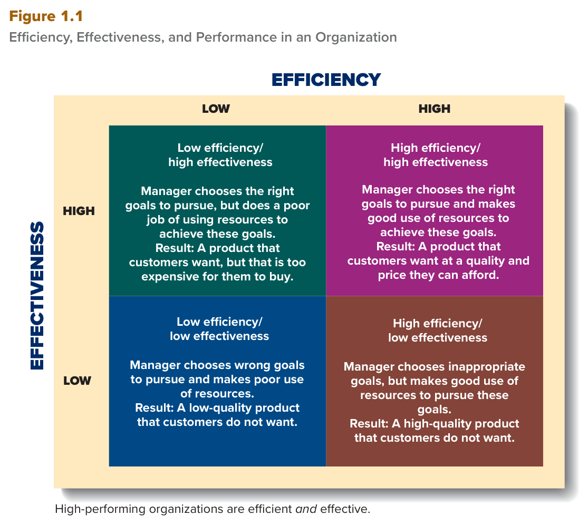

MGT 102 · Chapter 1 · القسم ١ من ٤:
What Is Management?
الهدف LO1-1: Describe what management is, why management is important, what managers do, and how managers use organizational resources efficiently and effectively to achieve organizational goals.
مادة MGT 102 كلها تدور حول سؤال واحد: وش يسوي المدير عشان المنظمة توصل لأهدافها؟ هذا الدرس يعطيك الكلمات اللي بتشوفها في كل سؤال بعده: organization، manager، management، efficiency، effectiveness.
الفصل الأول أربعة أقسام: ١ وش هي الإدارة؟ · ٢ وظائف الإدارة الأربع · ٣ مستويات المديرين ومهاراتهم · ٤ التغيّرات الحديثة والتحديات العالمية. ابدأ هنا، واحفظ التعريفات بالإنجليزي زي ما هي — الاختبار بالإنجليزي، والاختيارات الغلط تغيّر كلمة وحدة بس من التعريف.
الكتاب يبدأ بسؤال: لما تسمع كلمة «مدير»، مين يجي ببالك؟ ويعطيك ثلاث صور مختلفة:
ثلاثتهم مديرين، مهما اختلف حجم الشغل. والكتاب يقول إنهم يشتركون في صفتين:
| # | الصفة المشتركة | وش يعني |
|---|---|---|
| ١ | كلهم يشتغلون داخل organizations (منظمات) | المنظمة = مجموعة ناس يشتغلون مع بعض وينسّقون أفعالهم (coordinate their actions) عشان يحققون أهداف كثيرة ومتنوعة، أو «نتائج مستقبلية مرغوبة» (desired future outcomes). |
| ٢ | كلهم مسؤولين عن الموارد | المدير (manager) = الشخص المسؤول عن الإشراف (supervising) على موارد المنظمة البشرية وغيرها (human and other resources)، يعني يتأكد إنها تنستخدم صح وبأقصى فايدة عشان المنظمة توصل لأهدافها. |
انتبه: المنظمة عند الكتاب ناس، مو مبنى ولا شعار ولا سجل تجاري. مطعم، مستشفى، نادي، جامعة، شركة عالمية — كلها منظمات لأن فيها ناس ينسّقون شغلهم لهدف مشترك.
الكتاب يفتح الفصل بقصة Brian Chesky. لما جت COVID-19، إيرادات Airbnb نزلت ٨٠٪ في أول شهرين — يسمّيها «تجربة شبه موت» للشركة. وش سوى؟
النتيجة: بعد سنتين، الحجوزات والإيرادات تجاوزت أعلى مستوياتها قبل الجائحة. الكتاب يستخدم القصة عشان يجاوب: كيف يساهم المدير في نجاح منظمته؟ — بقرارات على الموارد (ناس، فلوس، هيكل) في بيئة تتغيّر بسرعة.
Organizations are collections of people who work together and coordinate their actions to achieve a wide variety of goals or desired future outcomes. A manager is a person responsible for supervising the use of an organization's resources to meet its goals. Managers are the people responsible for supervising and making the most of an organization's human and other resources to achieve its goals.
تعريف الإدارة في الكتاب فيه ثلاث قطع. احفظها بالترتيب لأن الاختبار يغيّر قطعة وحدة ويخلي الباقي:
| القطعة | بالإنجليزي | وش يعني |
|---|---|---|
| ١ · وش تسوي؟ | planning, organizing, leading, and controlling | التخطيط (planning)، التنظيم (organizing)، القيادة (leading)، الرقابة (controlling) — أربع وظائف بهذا الترتيب. القسم ٢ كله عنها. |
| ٢ · على وش؟ | of human and other resources | الموارد البشرية وغيرها. |
| ٣ · ليش؟ | to achieve organizational goals efficiently and effectively | عشان تحقيق أهداف المنظمة بكفاءة وفعالية — الكلمتين مع بعض، دايم. |
وش هي الموارد (resources)؟ الكتاب يعدّها بالاسم، وكلها ممكن تجي كاختيارات في سؤال «أي من هذي مو مورد؟»:
من أهم أهداف أي منظمة: تقدّم سلع وخدمات الزبائن يقدّرونها ويبونها (goods and services that customers value and desire). الكتاب يعطي ثلاث أمثلة على نفس الفكرة:
| المدير | هدفه الأساسي |
|---|---|
| Brian Chesky في Airbnb | يلبّي حاجة المسافرين والعاملين عن بُعد لمكان ينامون فيه أو يشتغلون أو يرتاحون أو يغامرون. |
| مدير مطعم وجبات سريعة | أكل لذيذ وسريع الزبون يستمتع فيه ويرجع يشتريه. |
| مدير تصنيع | يوازن بين الجودة اللي يبيها الزبون وضغط التكلفة (cost effective). |
لاحظ إن كل مدير هدفه يرضي الزبون بشكل ما — وهذا يوصّلنا للسؤال الكبير في المفهوم الجاي: كيف نقيس إذا المدير نجح؟
Management is the planning, organizing, leading, and controlling of human and other resources to achieve organizational goals efficiently and effectively. An organization's resources include assets such as people and their skills, know-how, and experience; machinery; raw materials; computers and information technology; and patents, financial capital, and loyal customers and employees. One of the key goals that organizations try to achieve is to provide goods and services that customers value and desire.
الكتاب يبدأ بمقياس النجاح: Organizational performance (الأداء التنظيمي) = مقياس كيف يستخدم المديرين الموارد المتاحة بكفاءة وفعالية عشان يرضون الزبائن ويحققون أهداف المنظمة. والأداء يزيد بشكل مباشر (in direct proportion) مع زيادة الكفاءة والفعالية. طيب وش الفرق بينهم؟
| Efficiency · الكفاءة | Effectiveness · الفعالية | |
|---|---|---|
| التعريف | مقياس قدّ إيش الموارد تنستخدم بإنتاجية (بدون هدر) (how productively resources are used) عشان تحقيق هدف. | مقياس مدى مناسبة الأهداف (appropriateness of the goals) اللي اختارها المديرين، ودرجة تحقيقها. |
| السؤال اللي يجاوبه | كيف نسوي الشي؟ — «هل سوينا الشي صح؟» | وش نسوي؟ — «هل سوينا الشي الصح؟» |
| متى المنظمة كذا؟ | لما المدير يقلّل المدخلات (input resources: عمالة، مواد خام، قطع) أو الوقت اللازم لإنتاج نفس المخرجات (output). | لما المدير يختار أهداف مناسبة وبعدين يحققها. |
| أمثلة الكتاب | Wendy's: قلّايات أقل زيت وأسرع طبخ. UPS: السائق يخلّي باب الشاحنة مفتوح في المسافات القصيرة عشان يوفّر وقت التوصيل. Momentive (كانت SurveyMonkey): الرئيس التنفيذي Zander Lurie أعاد تجهيز المنتجات، ألغى نشاط فاشل، ووسّع أنشطة ناجحة. |
McDonald's: اختاروا هدف تقديم الفطور عشان يجذبون زبائن أكثر، وبعدين خلّوه طول اليوم — هدف صح ونجح. |
الشركات عالية الأداء زي Apple وAmazon وWalmart وHome Depot وAccenture وHabitat for Humanity عندها الاثنين في نفس الوقت (simultaneously efficient and effective). والمدير الفعّال = يختار الأهداف الصح وعنده المهارة يستخدم الموارد بكفاءة.

هذا هو شكل الكتاب نفسه. المحور الرأسي Efficiency (فوق = High، تحت = Low) والأفقي Effectiveness (يسار = Low، يمين = High)، وكل مربع يقول: وش اختار المدير (هدف صح / غلط) + كيف استخدم الموارد (زين / سيئ) = وش النتيجة عند الزبون. المربع الأعلى يمين (High / High) هو المنظمة عالية الأداء. لو جاك سؤال «المدير اختار الهدف الصح بس بذّر الموارد» = المربع الأسفل يمين: منتج الزبون يبيه بس غالي عليه. و«استخدم الموارد زين بس الهدف غلط» = المربع الأعلى يسار: منتج جودته عالية بس ما أحد يبيه.
Organizational performance is a measure of how efficiently and effectively managers use available resources to satisfy customers and achieve organizational goals. Efficiency is a measure of how productively resources are used to achieve a goal. Organizations are efficient when managers minimize the amount of input resources (such as labor, raw materials, and component parts) or the amount of time needed to produce a given output of goods or services. Effectiveness is a measure of the appropriateness of the goals that managers have selected for the organization to pursue and the degree to which the organization achieves those goals. Organizations are effective when managers choose appropriate goals and then achieve them. High-performing organizations are simultaneously efficient and effective.
الكتاب يعطي أربعة أسباب. الاختبار غالباً يسأل عن الأرقام أو عن مصطلح social learning:
| # | السبب | التفاصيل من الكتاب |
|---|---|---|
| ١ | المهارات الإدارية مطلوبة | الشغل اليوم متغيّر ومعقّد. المنظمات تحتاج ناس يفهمون هذا التعقيد، يتعاملون مع المفاجآت اللي تصير في بيئة الشغل (environmental contingencies)، ويتخذون قرارات أخلاقية وفعّالة (ethical and effective). |
| ٢ | التعلّم من تجارب غيرك social learning |
الإنسان يتعلّم من تجربته الشخصية أو من تجارب غيره. دراسة الإدارة تعرّضك لدروس تعلّمها غيرك، فتصير أقل احتمال تكرّر أغلاطهم. ولما تدرس وتطبّق سلوكيات المديرين الجيدين والشركات عالية الأداء، تجهّز نفسك تساعد صاحب العمل الجاي ينجح. |
| ٣ | الفايدة الاقتصادية | في أمريكا، المدير العام (general manager) راتبه الوسيط (median wage) $97,970، والوظائف متوقّع تزيد بين ٤٪ و٧٪ إلى سنة ٢٠٣١. |
| ٤ | قرارات أحسن خارج الشغل | تدريب فريق أطفال، تنظيم سباق خيري ٥ كيلو، تخطيط ميزانيتك، بدء مشروع جديد — مبادئ الإدارة تخلّيك تفهم الناس وتتخذ قرارات جيدة وتحسّن نجاحك الشخصي. |
Organizations need people who can understand this complexity, respond to environmental contingencies, and make decisions that are ethical and effective. By studying management in school, you are exposing yourself to the lessons others have learned. The advantage of such social learning is that you are less likely to repeat the mistakes others have made in the past. In the United States, general managers earn a median wage of $97,970, with a projected growth in job openings of between 4% and 7% between now and 2031. Learning management principles can help you make good decisions in nonwork contexts.
جاوب قبل ما تفتح الحل. لو غلطت في سؤال ٣ أو ٤، ارجع لجدول الكفاءة والفعالية فوق.
B. هذا تعريف الكتاب حرفياً لـ organization. الاختيار C فخ: فريق الإدارة هم المديرين بس، مو كل الناس. والاختيار D يخلط: الناس «مورد» من موارد المنظمة، بس المنظمة نفسها هي المجموعة اللي تنسّق.
C. الأربعة: planning, organizing, leading, controlling. الـ marketing نشاط في قسم من أقسام الشركة، مو وظيفة من وظائف الإدارة. الفخ إنهم يحطون كلمة تبدو «إدارية» بين ثلاث كلمات صح.
B. أقل زيت + أقل وقت لنفس المخرجات = تقليل المدخلات = efficiency. الاختيار A هو فخ التبديل: effectiveness عن اختيار الهدف الصح، وما فيه شي بالسيناريو عن اختيار هدف. وD كلمة من مفهوم ثاني حطّوها عشان تشتّتك.
C. هدف صح = فعالية عالية، واستخدام سيئ للموارد = كفاءة منخفضة → المربع الأسفل يمين: الزبون يبيه بس غالي. A هو مربع High / High. وB هو المربع المعكوس (كفاءة عالية، فعالية منخفضة) — الفخ الأشهر. وD هو Low / Low.
B. هذا تعريف الكتاب. الاختيار C تعريف effectiveness لحاله، وD تعريف efficiency لحاله — الفخ إنهم يعطونك نص التعريف كأنه الكل. الأداء = الاثنين مع بعض.
| English | بالعربي | الفخ |
|---|---|---|
| Organization | منظمة | ناس ينسّقون أفعالهم — مو مبنى ولا سجل |
| Manager | مدير | يشرف على human and other resources |
| Management | الإدارة | ٤ أفعال بالترتيب + efficiently and effectively |
| Organizational resources | الموارد التنظيمية | تشمل الناس والزبائن الأوفياء والبراءات — مو بس فلوس وآلات |
| Organizational performance | الأداء التنظيمي | يزيد مع الاثنين: efficiency + effectiveness |
| Efficiency | الكفاءة | كيف: أقل مدخلات / وقت لنفس المخرجات |
| Effectiveness | الفعالية | وش: أهداف مناسبة + تحقيقها |
| Social learning | التعلّم من تجارب غيرك | ما تكرّر أغلاط غيرك — مو «دراسة بمجموعة» |
مبني من كتاب Contemporary Management (Jones & George، McGraw Hill) —
Chapter 1: Managers and Managing، القسم الأول What Is Management?، الهدف LO1-1
(صفحات ٢–٦)، مع ملخّص الفصل Summary and Review.
ناقص: قصة A Manager's Challenge عن Airbnb مختصرة هنا مو كاملة، ومثال
Momentive جا بسطر واحد. باقي أهداف الفصل (LO1-2 إلى LO1-6) في الأقسام ٢ و٣ و٤.